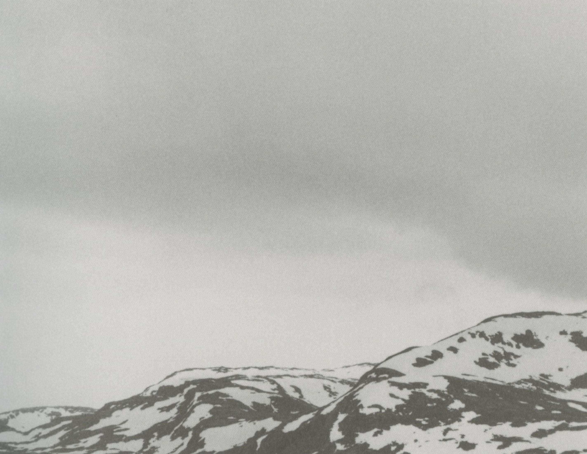

Morten Spaberg
Landscape photographer
Portraits
Morten Spaberg
Portrait photographer
Landscapes
E16, Begnadalen. 2013
Myren Gård, Valdres. 2013
Oppsal, Oslo. 2012
Oslo. 2012
Nesodden. 2012

Filefjell. 2011
Tronfjell, Alvdal. 2011
Hvalstad. 2010
Oslo. 2008
Torshovdalen, Oslo. 2008
Trengereid. 2006
Vidden, Bergen. 2005
Ljosuregga. 2005